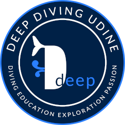
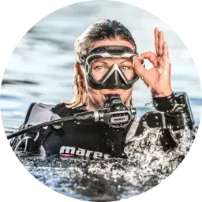
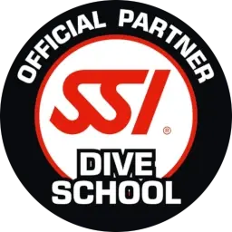

BENVENUTI
Un viaggio affascinante, una continua avventura, una varietà entusiasmante di colori e forme.
Ovunque è acqua, silenzio cadenzato dal solo respiro, leggerezza, armonia di movimenti.
DEEP DIVING UDINE è una associazione sportiva dilettantistica friulana nata semplicemente perché crediamo che il mare, con i suoi silenziosi, eleganti e variopinti abitanti, meriti di essere esplorato con competenza e rispetto.
Ogni immersione, se si è ben preparati, sarà un'occasione per scoprire sempre cose nuove, impossibile non appassionarsi!
Ogni immersione, se si è ben preparati, sarà un'occasione per scoprire sempre cose nuove, impossibile non appassionarsi!
PERCHÉ DEEP Chi siamo
DEEP non vuol dire solo profondo ma, come avrete notato, è anche una sigla.
D come Diving, perché immergersi è l'attività più affascinante che ci sia. E come Education, perché per divertirsi veramente sott'acqua è necessaria un'ottima preparazione teorica e tecnica e un doveroso rispetto per l'ambiente. E come Exploration, perché l'immersione è una continua avventura e noi vogliamo viverla nel migliore dei modi, viaggiando ed esplorando i siti più affascinanti del mondo. P come Passion, pura e semplice passione per la subacquea. In una sola parola, il riassunto di ciò che ci anima e che vorremmo trasmettere. |
CORSI Brevetto Open Water
Conoscenza, abilità, equipaggiamento ed esperienza: ecco quel che serve per fare immersioni piacevoli e sicure.
Si parte con il corso per subacquei principianti Open Water Diver, per poi progredire con i corsi avanzati che meglio rispondono alle vostre esigenze, tenendo presente che l'esperienza è fondamentale. Immersione profonda, su relitti, in notturna, con la muta stagna, nitrox, foto/video sub digitale e tanti altri brevetti subacquei specifici da poter scegliere. Offriamo anche corsi per i subacquei desiderosi di spingersi oltre i limiti di non decompressione, brevetti ecologici e professionali. |
DIDATTICA Partner SSI
DEEP DIVING UDINE è una Scuola Subacquea autorizzata SSI (Scuba Schools International), membro fondatore dell’RSTC (Recreational Scuba Training Council) e certificata ISO.
Con oltre 3.500 centri di formazione, più di 100.000 professionisti in oltre 150 paesi e materiale didattico tradotto in più di 40 lingue diverse, SSI è la più grande agenzia di addestramento al mondo. Al termine di qualsiasi corso subacqueo rilasciamo un brevetto valido a livello internazionale, che vi abilita a fare immersioni e noleggiare l'attrezzatura anche nel più remoto angolo della terra o, meglio, del mare, presso qualsiasi diving center. |
PER SAPERNE DI PIÙ
|
L'ASSOCIAZIONE
Se volete qualche notizia in più su DEEP DIVING UDINE e sugli istruttori subacquei, andate direttamente alla pagina CHI SIAMO. Siamo a vostra disposizione ogni venerdì sera dalle 19.30 alle 20.30, in via Stiria 47, a Udine, Friuli Venezia Giulia. Nella pagina CONTATTI trovate la mappa e vari modi per ottenere maggiori informazioni. |
CORSI E PERCORSI SUBACQUEI
Tutte le indicazioni utili ai principianti che vogliono fare il corso base Open Water Diver si trovano, ovviamente, alla pagina CORSI. Se avete già ottenuto il brevetto, anche di un'altra didattica, e intendete proseguire facendo esperienza, non c'è nulla di meglio che fare un corso subacqueo di specialità: la pagina che fa per voi allora è SPECIALTY. |
TENERSI AGGIORNATI
Un bravo subacqueo deve sempre stare al passo coi tempi e soprattutto fare tante immersioni! Ogni week-end (meteo permettendo) ci organizziamo per qualche tuffo e almeno una volta all'anno una bella vacanza subacquea al caldo non ce la toglie nessuno! Seguiteci sui principali social media. |